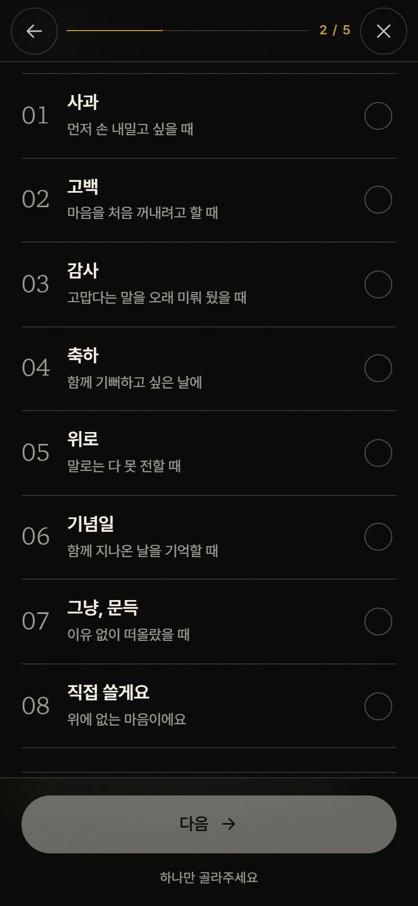
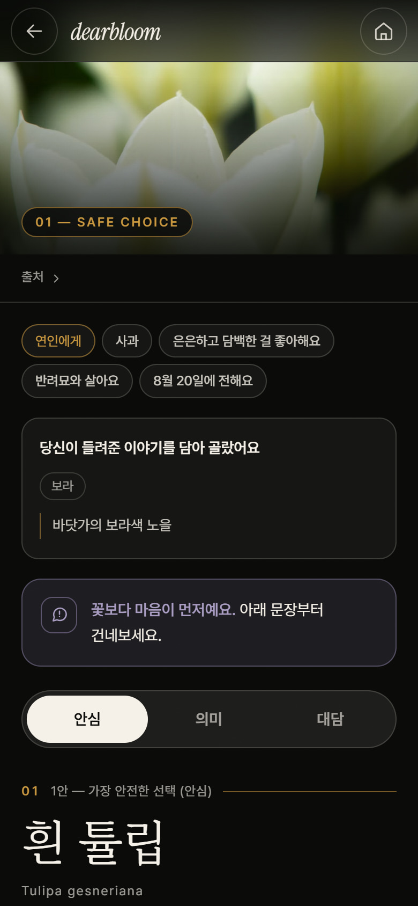
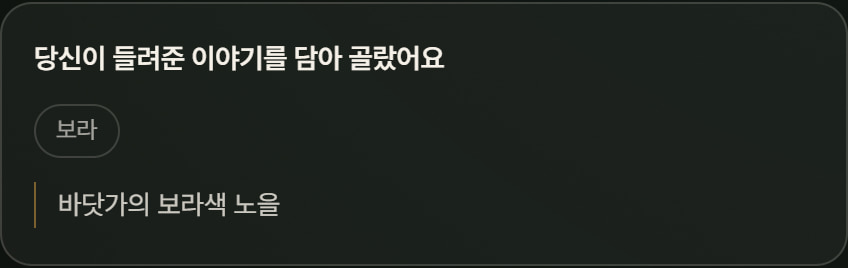
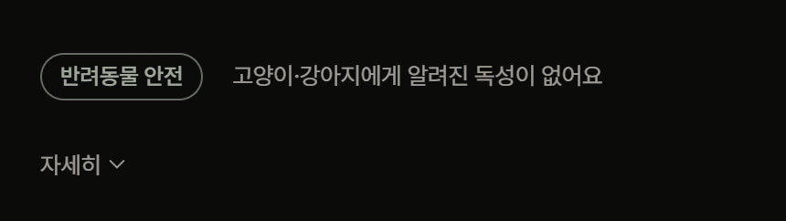
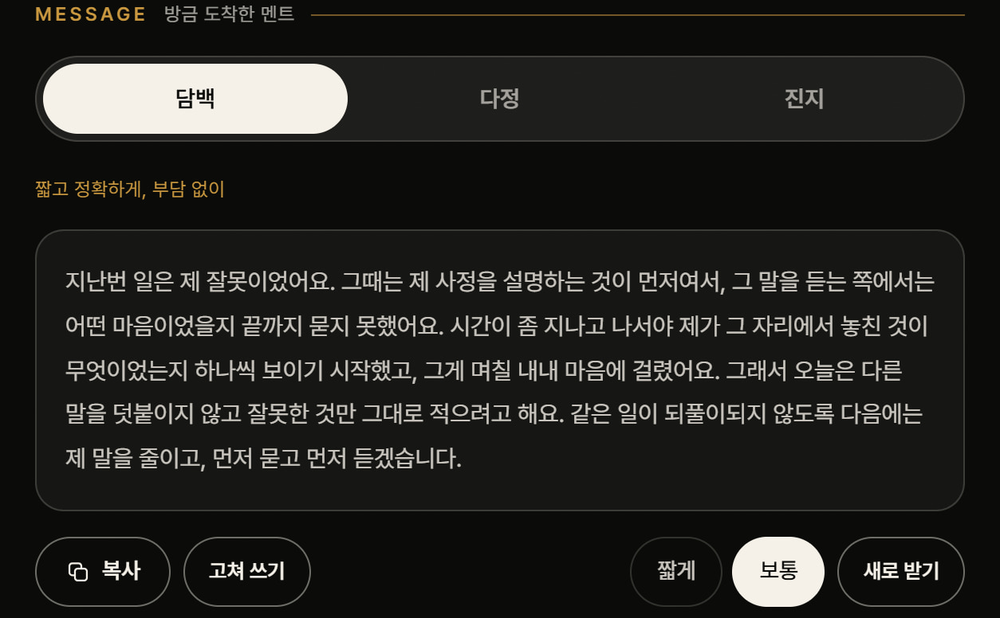

AI 구조·프로토타입
AI는 마음을 읽고,
검증된 데이터는 사실을 지킵니다
안전 원칙
사실은 데이터에서, AI는 해석과 표현에서.

01관계와 마음부터 선택

02꽃 3안과 고른 이유를 함께

03적어 준 이야기를 추천 단서로

04반려동물 안전을 먼저 확인

05함께 전할 문장까지 만들어 줍니다
역할 분리
AI가 하는 일
“첫눈을 함께 봤어요” 같은 자유 문장 이해
취향·추억·분위기 단서 추출
추천 꽃에 맞는 자연스러운 메시지 작성
사용자의 말투에 맞춰 문장 다듬기
검증 데이터·엔진이 하는 일
꽃말과 출처 확인
고양이·강아지 안전성 판단
크게 위험한 꽃·비선호 꽃 강제 제외
관계·상황·계절·취향 점수와 3안 다양성
지켜지는 것
AI가 출처 없는 꽃말을 만들지 않음
AI가 반려동물 독성을 추측하지 않음
메시지 생성 실패 시 검토된 예문으로 폴백
추억과 편지 원문은 공유 URL·분석 로그에 남기지 않음
정적 데모 고지
공모전용 데모는 서버 없이 동작합니다. 추천·안전·꽃말·이야기는 실제 엔진과 데이터를 쓰고,
카드 문구는 API 키를 노출하지 않기 위해 미리 검토한 예문을 씁니다.
이 차이를 숨기지 않고 화면에서 그대로 안내합니다.
지금 직접 눌러볼 수 있는 기능
관계·상황 기반 꽃 3안 추천
자유 서술을 반영한 추천 변화
반려동물 위험 꽃 제외
꽃말·나라별 의미·설화·문학
여러 사람 각각 추천·단체 부케
카드 문구 수정·새로 받기
비밀 편지
꽃 조합기
366일 탄생화
구매처 탐색
사진 · 칼라 — Bernard Spragg. NZ, 퍼블릭 도메인 (Wikimedia Commons)